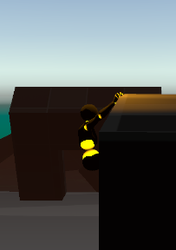

State Details
State Overview
This state is used to scale over objects that have been configured in your scenes that are assigned to a layer that is configured to detect climbable surfaces. This state allows traversal over surfaces that are not walkable in an omni-directional fashion.
Entry Requirements
This state can be entered from multiple states that include airborne states, grounded states and aquatic states. The player can transition to a climbing state only when a climbable surface is detected, what a climbable surface is, is completely definable by the developer.
Parameters
All parameters listed below have detailed Tooltips in the Unity Editor.
Base State Parameters
This table defines configurable parameters that are related to this state but are shared between multiple states.
Parameter | Data Type | Header | Details |
|---|---|---|---|
Ledge Check Layer Mask | LayerMask | Climbing Check Settings | Used to supply states that can be used to detect ledges when climbing. Ledges can be defined as the peaks of climbable surfaces. |
Climb Check Layer Mask | LayerMask | Climbing Check Settings | Used to supply states that can be detected as climbable surfaces. |
Climb Check Distance | float | Climbing Check Settings | The distance from the player where climbable surfaces will be detected. |
Climb Check Origin Offset | Vector3 | Climbing Check Settings | The offset from the players origin that the climb check raycast originates from. This is used after the initial check has detected a climbable surface. |
Initial Climb Check Origin Offset | Vector3 | Climbing Check Settings | The offset from the players origin that the climb check raycast originates from. This is used for the initial check. |
State Specific Parameters
This table defines configurable parameters that are utilized solely by this state.
Parameter | Data Type | Header | Details |
|---|---|---|---|
Climbing Speed | float | Movement Variables | The movement speed applied in this state. |
Smooth Speed | float | Movement Variables | The movement smoothing speed applied in this state. |
Enable Interval Climb | bool | Interval Climb Variables | When true, interval climb is enabled. |
Climbing Speed Interval Max | float | Interval Climb Variables | The maximum movement speed applied when climbing inside of the climb interval. |
Climbing Speed Interval Min | float | Interval Climb Variables | The maximum movement speed applied when climbing outside of the climb interval. |
Smooth Speed Interval Max | float | Interval Climb Variables | The movement smoothing speed applied in this state while inside of the climb interval. |
Smooth Speed Interval Min | float | Interval Climb Variables | The movement smoothing speed applied in this state while outside of the climb interval. |
Jump Height From Climb | float | Jump Variables | The jump height applied from this state. |
Jump Time From Climb | float | Jump Variables | The jump duration applied from this state. |
Climbing Jump Strength | float | Jump Variables | The strength applied to the jump. |
Can Jump From Climb | bool | Jump Variables | Allow the player to jump from wall while climbing. |
Rotation Speed | float | Rotation Variables | The rotation speed applied in this state. |
Gravity | float | Gravity Variables | The gravity applied in this state. |
Gravity Multiplier | float | Gravity Variables | The gravity multiplier applied in this state. |
Auto Camera Follow | bool | Climbing Settings | Allow the camera to automatically follow the player while climbing. |
Reset Current Speed | bool | Climbing Settings | Reset the players current speed when entering a Climbing state. |
Apply Climbing Guard Rails | bool | Climbing Settings | If true, climbing guard rails are applied. |
Climbing Guard Rails Width | float | Climbing Settings | The distance from the player origin to check if the sides of the climb is no longer detecting a scalable. |
Climb Tilt Speed | float | Climbing Settings | The speed at which the player rotates depending on the contour of the climbable object. |
Allow Ledge Climb | bool | Ledge Climb Settings | If true, the player will climb over ledges while in a climbing state. When false, the player jumps over the ledge. |
Ledge Check Distance | float | Ledge Climb Settings | The distance in front of the player that ledges will be checked for. |
Ledge Check Height | float | Ledge Climb Settings | The distance downward to look for a ledge. In other words, the length of the downward raycast that detects ledges. |
General Usage
This section covers some general usage topics for this state.
Defining Climbable Surfaces
To define a climbable surface, the developer will need to supply the in-scene Game Object to the layer of their choice. This layer must then be added to the Climb Check Layer Mask parameter.
Interval Climb
The interval climb feature is a togglable feature that allows the end user to align the movement speeds of the character to better follow the movements that the animation might represent. This feature requires the end user to supply animation events to the climbing animations that will tell the Player Controller Plus framework to adjust the movements of the player.
The animation events are titled simply as AtFootOfClimb and NotAtFootOfClimb. When the player should be move normally, place the event AtFootOfClimb and when the player should have movement altered, place the event NotAtFootOfClimb. This feature is not applied when the player is considered to be idle when climbing.
Assuming the Enable Interval Climb parameter is true, when the AtFootOfClimb is triggered, the parameters Climbing Speed Interval Min and Smooth Speed Interval Min are used to determine player movement. When the NotAtFootOfClimb is triggered, the parameters Climbing Speed Interval Max and Smooth Speed Interval Max are used to determine player movement.
To use consistent movement disable the interval climb feature by setting the Enable Interval Climb parameter to false.
Climb Jumping
Climb jumping allows for the player to jump from a climb while in a climbing state. To enable/disable this ability, toggle the Can Jump From Climb parameter.
Ledge Climbing
Ledge climbing allows for the player to seemingly climb over a ledge when the apex of a climb has been reached and a ledge is detected. To enable the ledge climbing feature, set the Allow Ledge Climb parameter to true.
The ledge climbing animation will be used when this feature is enabled, using the Ledge Climbing animation node rather than the Ledge Jumping animation node.
Ledge Jumping
Ledge jumping allows for the player to hop over a ledge at the apex of a climb rather than climb over, a behavior typically seen in retro 3D platformers such as Banjo Kazooie. To enable the ledge jumping feature, set the Allow Ledge Climb parameter to false.
The ledge jumping animation will be used when this feature is enabled, using the Ledge Jumping animation node rather than the Ledge Climbing animation node.
Climbing Guard Rails
Climbing guard rails are a feature that can be enabled by setting the Apply Climbing Guard Rails parameter to true, which will stop the player from climbing off of the sides of a climbable surface. This feature can be configured to set a distance on both sides of the player where guard rails will be applied to fit your specific climbing needs.
Climbing Gallery |
|
|---|---|
|  |

|
{kind=link}
{kind=link}
{kind=link}
{kind=link}
{kind=link}
{kind=link}
{kind=link}
{kind=link}
{kind=link}
{kind=link}
{kind=link}
{kind=link}
{kind=link}
{kind=link}
{kind=link}
{kind=link}
{kind=link}
{kind=link}
{kind=link}